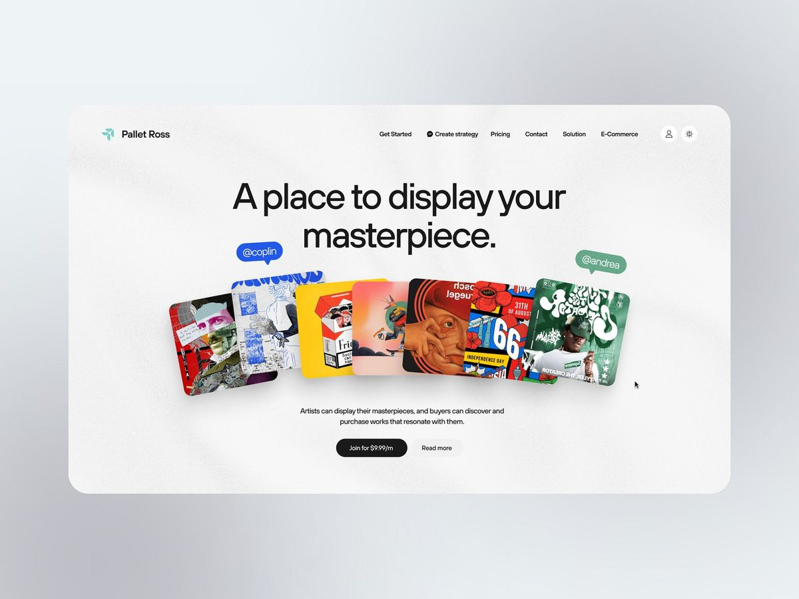
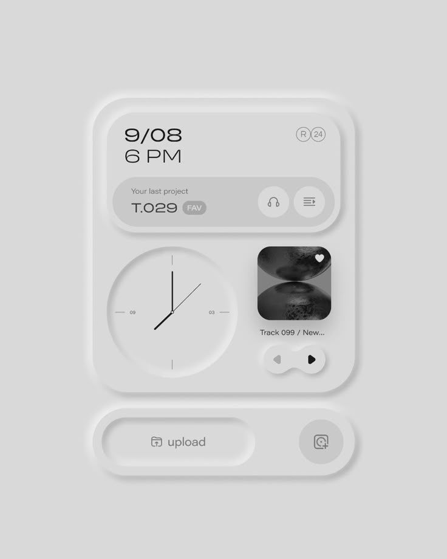
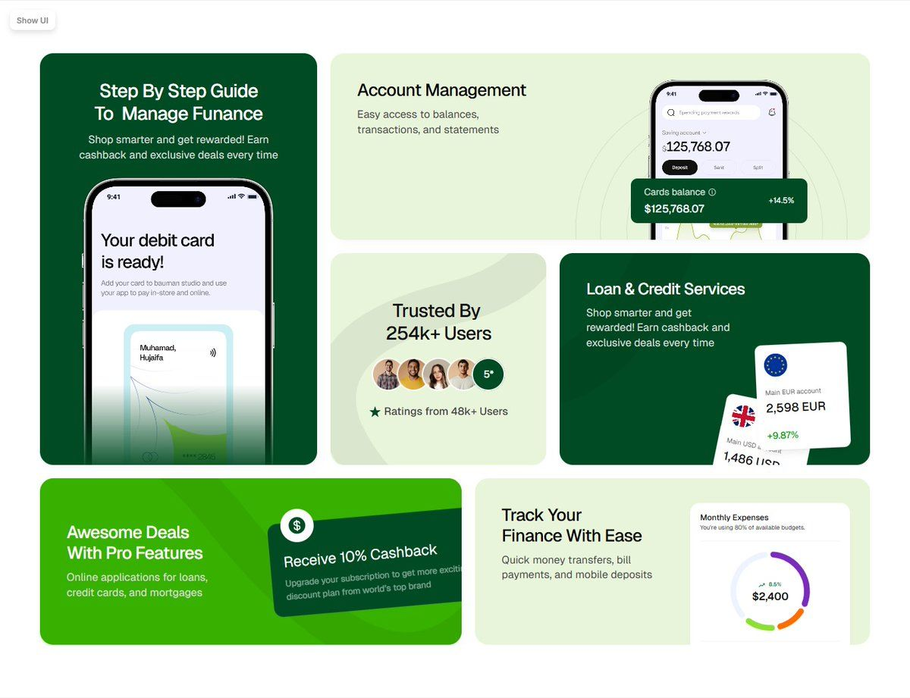
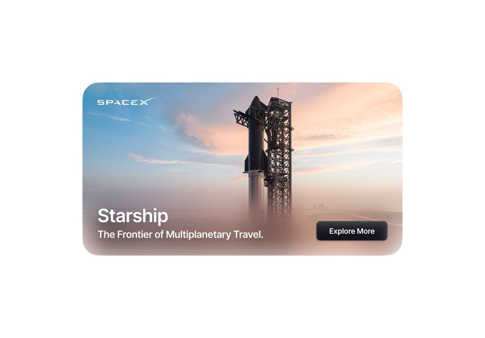
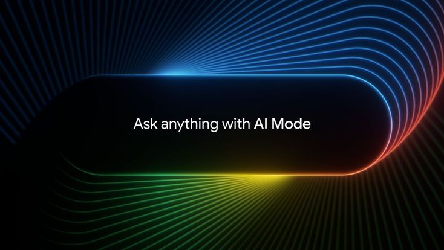

Design Trends That Will Define 2025

Like everything else, design progresses and evolves and has its own eras, and we are in the AI-motivated era of design.
Interactive 3D Objects
Three-dimensional models and environments can create engaging, immersive experiences when interaction helps a visitor understand something rather than merely making a page move.

AI Interfaces and Presence
UI and UX are becoming more natural and adaptive. AI can now act as a creative partner in design workflows, but human-centered decisions remain essential: technology should serve people, not replace them.

Bento Grids
A modular UI layout with varying tile sizes can make information feel organized and dynamic. It works best when the hierarchy is real, not simply decorative.

Modern Skeuomorphism
Familiar real-world textures and shapes can be brought into digital work in a lighter, more contemporary way.

Progressive Blur & Text Transitions
Subtle blur and thoughtful text transitions can guide focus, create depth, and make a story easier to follow.